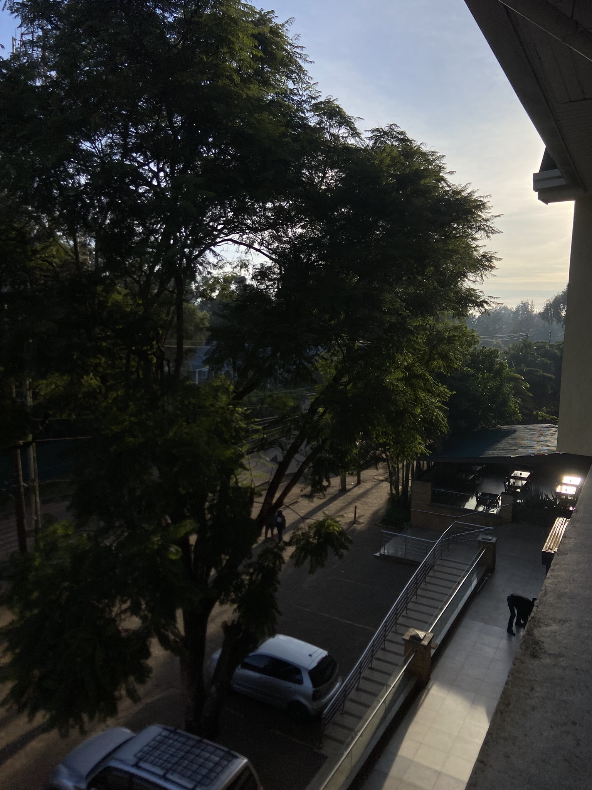

Routes & Rhythms
The magazine · Issue 01 · Stories
- FeatureBlack Joy, held alongside pain, not in place of it
- Public historyEdinburgh's untold stories, mapped
- Next issueTiny Travellers · Abagusii in Motion
Routes & Rhythms · Contents
In this issue
- 04Black Joy
A digital exhibit for the Griot Institute for Black Lives & Cultures
- 06Addressing Slavery and Colonialism in Scotland
A walking map and a home for family stories
- 08Tiny Travellers
Next issue: childcare and storytelling in African airports
- 10Abagusii in Motion
Next issue: Kisii culture, told with pride and polish
One day you'll be able to step inside these pages. For now, turn them.
03